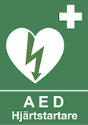

| Styrelsen | Frågor, fel i gemensamma utrymmen. Ange lägenhetsnummer | styrelsen@brfsofieberg.se |
| Hemsida | Se "Bra att veta" | https://brfsofieberg.se |
| Brand/olycka | SOS Alarm | 112 |
| Akuta fel (kontorstid) | Allgranth, mån–fre 7–15:30 Egen kostnad om det gäller bostaden |
08-420 380 81 |
| Akuta fel (ej kontorstid) | Dygnets Jour Egen kostnad om det gäller bostaden |
08-187 000 |
| Hjärtstartare | Sjöviksvägen 34 vid grovtvättstugan | |
| Avgifter/Förvaltare | SBC, kundtjanst@sbc.se | 0771-722 722 |
| Hissar | Kone | 0771-500 000 |
| Garageport | Alldoor | 08-739 2770 |
| Internet | Telenor | 020-222 222 |
| Kabel-TV | Tele2, https://tele2.se | 90 222 |